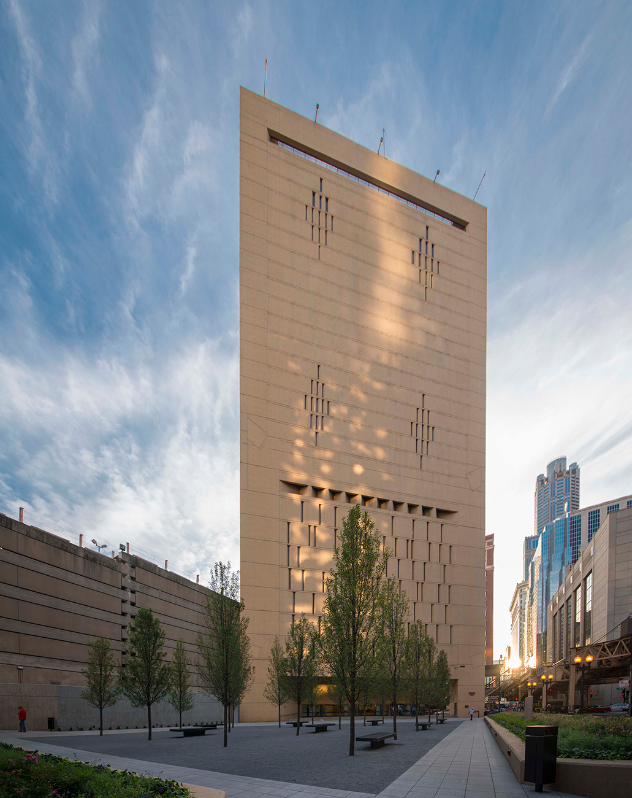
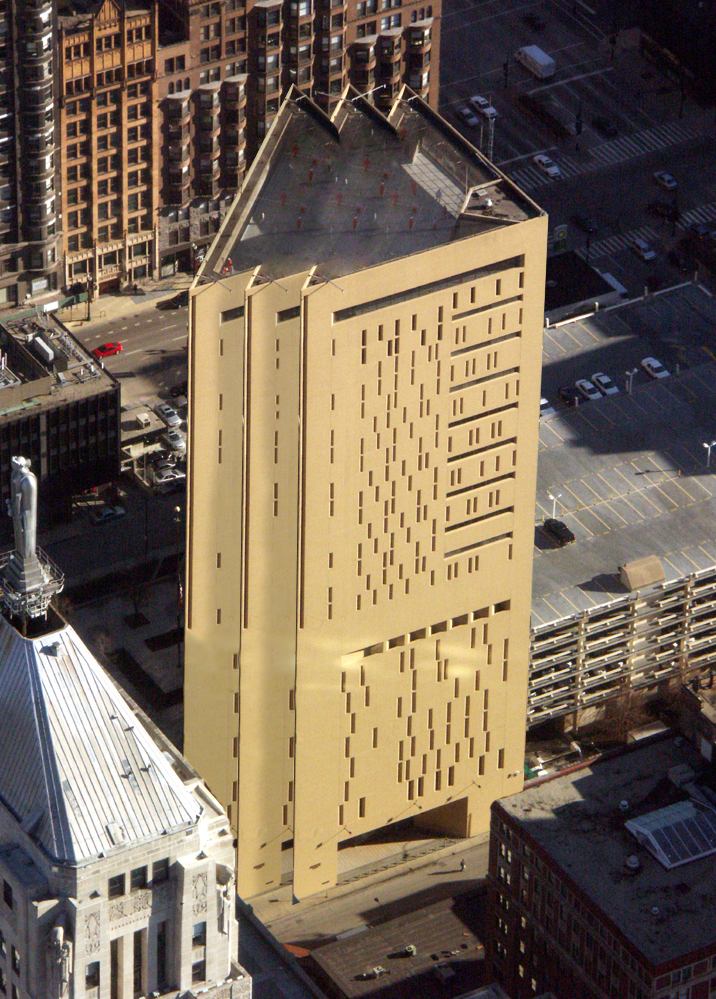
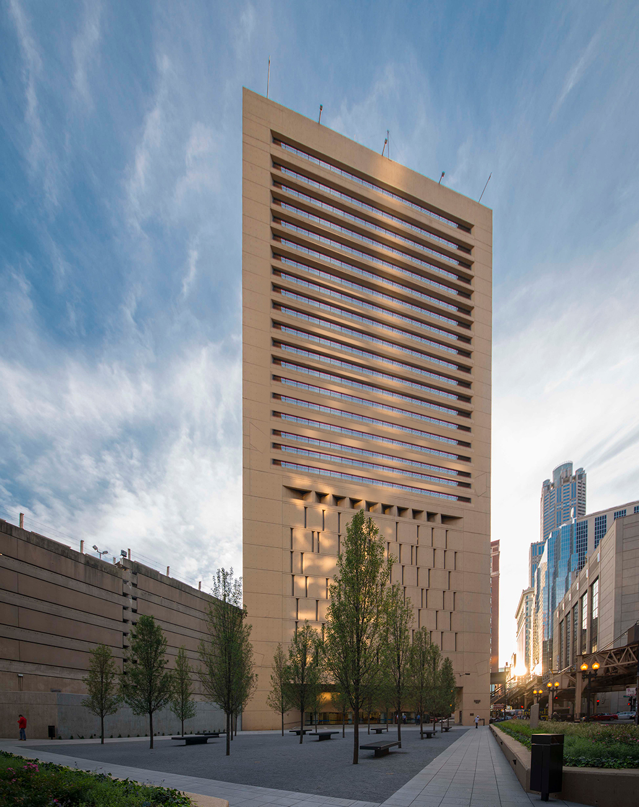

Photographic Fiction:
MCC Chicago
2018
The project involved using photographic manipulation techniques to create fictional images that give an existing building in Chicago a new narrative and identity. I selected the Metropolitan Correctional Center by Harry Weese as the building to work on. The distinctive feature that caught my attention was the uneven distribution of thin windows. To transform the building's character, I employed GIF animation to playfully rearrange, add, and subtract windows. This playful approach was intentionally applied to a prison building, creating an unexpected and contrasting vibe.

Some other concepts


